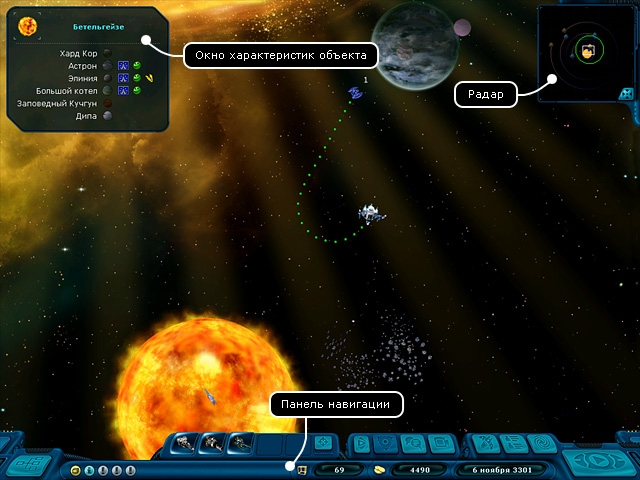
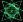

Руководство рейнджера > Экран космоса
|
Руководство рейнджера > Экран космоса
|
| Экран космоса Когда вы находитесь в космосе, на экране перед собой вы видите часть звездной системы. Там могут быть различные космические объекты: корабли, планеты, космические станции, предметы и т.д. Всплывающее окно покажет информацию по любому значимому объекту, стоит лишь навести на него курсор мышки. |

|
В правом верхнем углу экрана размещается панель
радара, а над основной панелью навигации
появляются дополнительные кнопки:
• Сканирование (I) - исследовать начинку другого корабля. • Разговор (T) - вступить в диалог с другим кораблем. • Оружейная панель (W) - показать/спрятать оружие. • История полетов (H) - перейти в режим просмотра истории полетов. Находясь в космосе, игрок может отдавать своему кораблю следующие приказы: • Полет - лететь в указанную точку. • Посадка - совершить посадку на планету или космическую станцию. • Преследование - следовать за другим кораблем на определенном расстоянии или вести бой в автоматическом режиме. • Прыжок к звезде - совершить гиперпрыжок к другой звездной системе. • Подъем предмета - поднять груз на борт корабля. • Стрельба из орудий - стрелять из орудий по кораблям или астероидам. Для быстрой прокрутки экрана космоса: • Подведите курсор мыши к тому краю экрана, в направлении которого вы хотите осуществить прокрутку. Для точной прокрутки экрана космоса: 1. Нажмите и удерживайте правую кнопку мыши, курсор должен примет "прокруточный" вид  .2. Продолжая удерживать кнопку, перемещайте курсор мыши в том направлении, в котором вам требуется произвести скроллинг. Чтобы центрировать камеру на ближайшего доминатора: • Нажмите клавишу X. Чтобы центрировать камеру на самого дальнего доминатора: • Нажмите клавишу Z. Чтобы вернуть камеру к кораблю игрока: • Нажмите клавишу С или кнопку "Отцентровать корабль" |